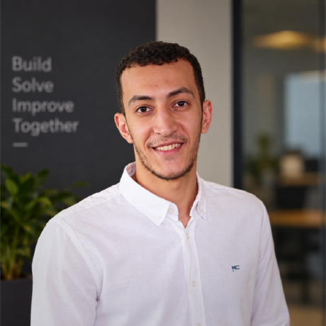

Mohamed
Magdy.
Building the backend.
Connecting the bigger picture.
Ruby on Rails, thoughtful APIs, and the systems behind scalable SaaS products.

HELLO, I’M MAGDYFrom idea to implementation.
A selection of personal projects, reusable tools, and explorations beyond the backend.
Promotable
↗An extensible promotion and coupon engine for Rails, with configurable rules, discount actions, and tenant-aware integration.
UpTime Robot
↗A Ruby on Rails application for checking whether a website is up or down. A focused exploration of website monitoring.
TogglClone
↗A React Native project inspired by Toggl, with screens for signing in, creating tasks, viewing tasks, and managing a profile.
Firebase Social
↗A native Android social app built with Kotlin and Google Firebase services, bringing mobile interfaces and connected data together.
Behind the code.
Building Hive
A multi-tenant SaaS platform for service allocation and delivery management, connecting order processing, payments, and data.
I’m Mohamed, a backend-focused software engineer based in Egypt. I’ve worked professionally with Ruby on Rails since 2023, with an emphasis on clean, maintainable systems.
My work spans REST APIs, background processing, authorization, and notifications—the pieces that help a product work reliably behind the scenes.
Languages & data
Ruby · JavaScript · SQL
PostgreSQL · MySQL
Backend & infrastructure
Rails · Sidekiq · Redis
Docker · REST APIs · CI/CD
Quality & workflows
RSpec · Pundit · AASM
Scenic · Avo
Interfaces & messaging
Stimulus · Tailwind CSS
Firebase Cloud Messaging
Giving back
to the ecosystem.
A better reload for grid views.
Contributed grid-view support for Avo’s record reloading, included in the Avo 3.24.0 release. A small improvement to a tool used by the Rails community.
See the release notes ↗Let’s build
something useful.
Have a project in mind or want to talk engineering?
mohamedmagdysaber@gmail.com ↗